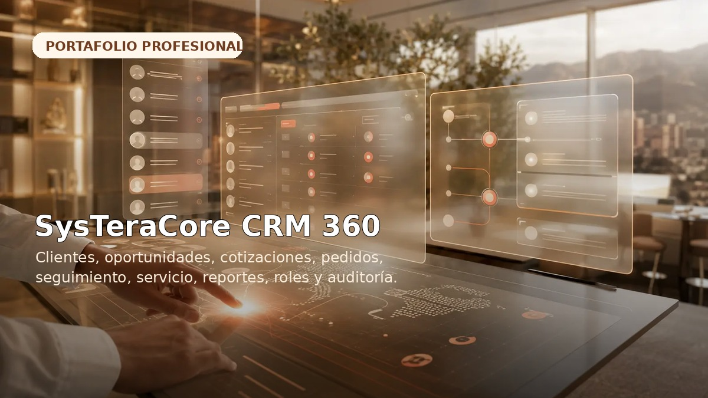
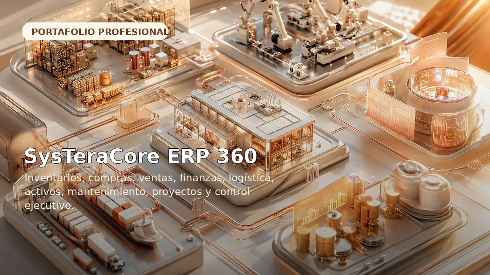
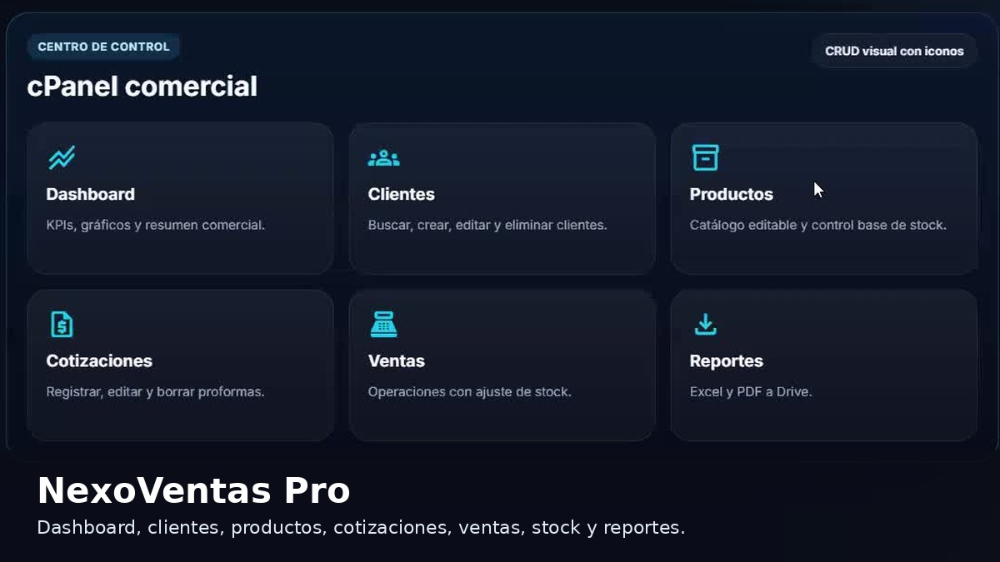
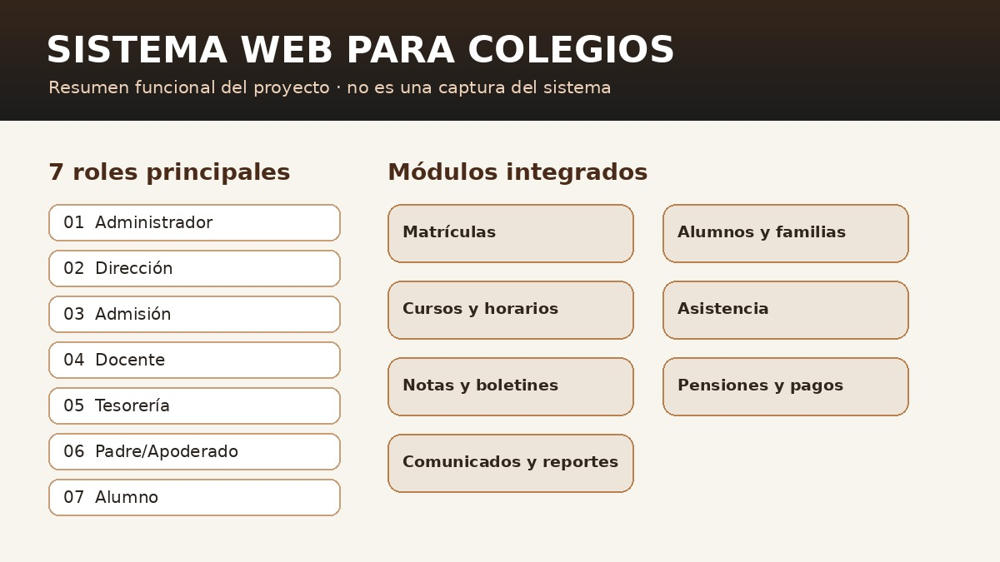
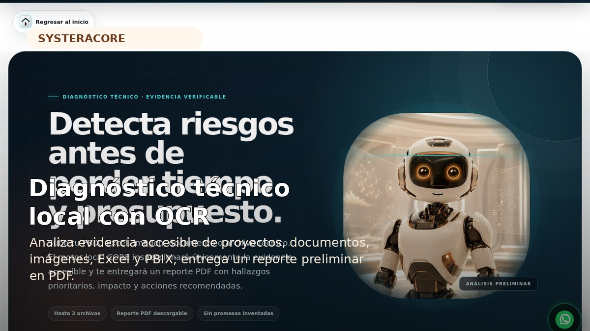
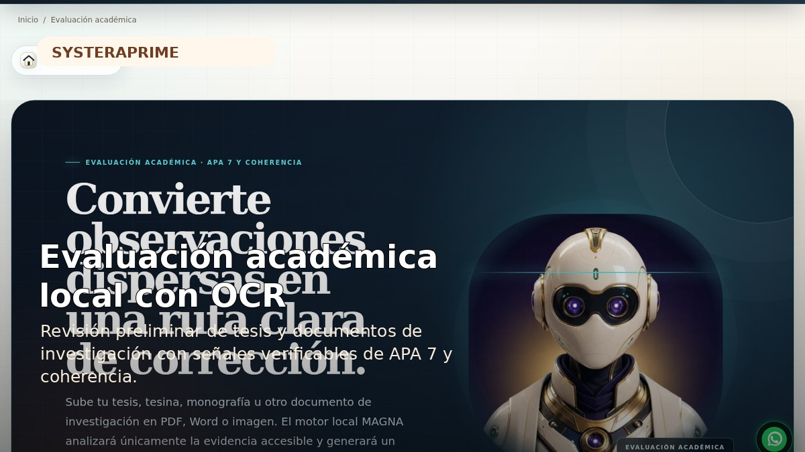
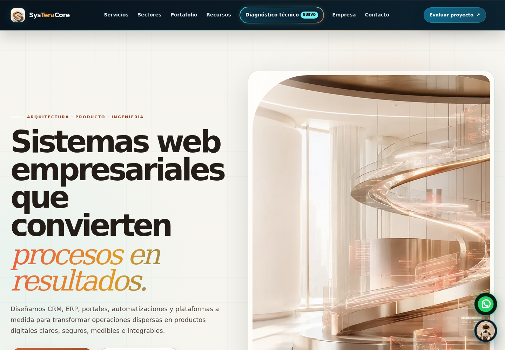
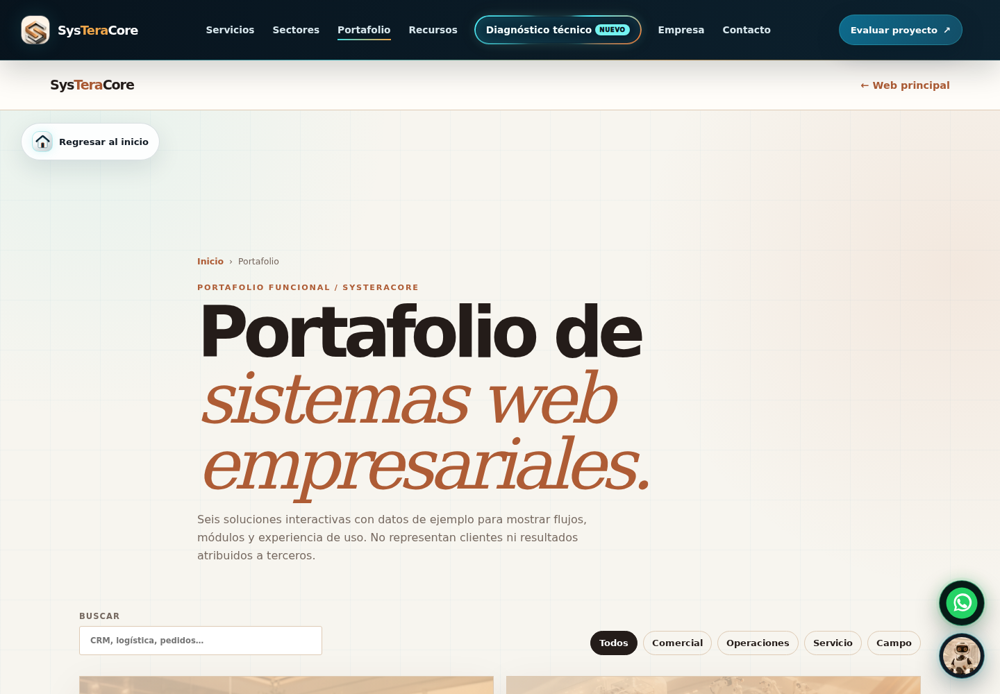
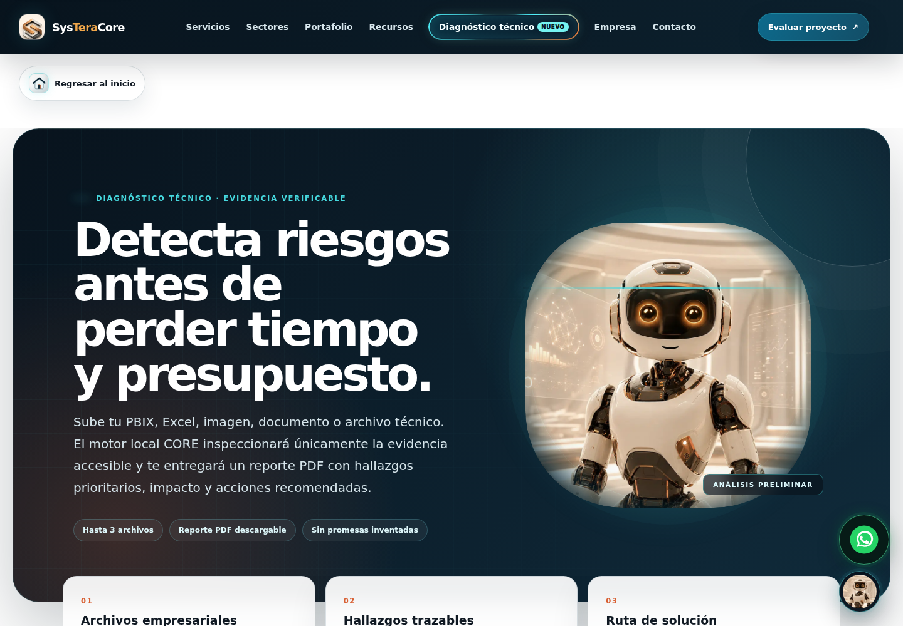
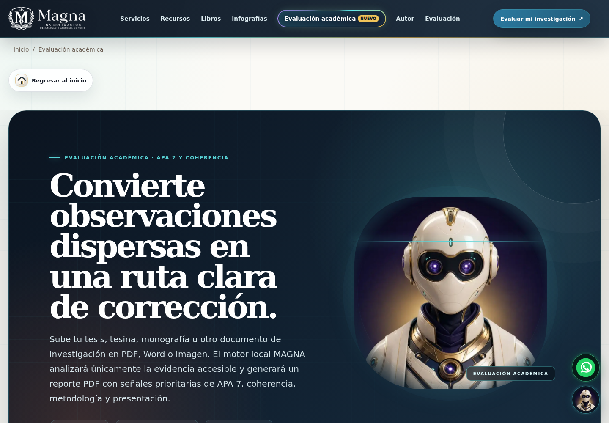

SysTeraCore CRM 360
Gestión de clientes, prospectos, oportunidades, cotizaciones, pedidos, seguimiento comercial, servicio, reportes, roles y auditoría.
CRMVentasSeguimientoReportes
Soy Carlos Andrés Caballero Castillo, Ingeniero de Sistemas y Maestro en Gestión Pública. Integro desarrollo web, Power BI, Excel/VBA, análisis funcional, QA, bases de datos y automatización para convertir procesos dispersos en soluciones claras, controlables y escalables.
Se presentan capacidades, módulos y evidencias visuales. El código fuente, bases de datos, credenciales y archivos instalables permanecen privados.

Gestión de clientes, prospectos, oportunidades, cotizaciones, pedidos, seguimiento comercial, servicio, reportes, roles y auditoría.

Solución modular para inventarios, compras, ventas, finanzas, logística, talento humano, activos, mantenimiento, proyectos y control ejecutivo.

Sistema comercial responsive con dashboard, clientes, productos, cotizaciones, ventas, ajuste de stock y reportes en Excel/PDF mediante el ecosistema de Google.

Centraliza matrículas, admisión, alumnos, familias, cursos, horarios, asistencia, notas, boletines, pensiones, comunicados y reportes con accesos diferenciados por rol.

Herramienta preliminar para revisar evidencia accesible en proyectos, documentos, imágenes, Excel y PBIX, y generar hallazgos priorizados en PDF.

Revisión preliminar de tesis, tesinas, monografías y documentos de investigación con señales verificables de APA 7 y coherencia académica.
Alcance: las vistas publicadas son demostrativas y utilizan datos de ejemplo. No representan información de clientes ni permiten descargar el producto.
Capturas obtenidas de los archivos entregados para el portafolio. Se omiten configuraciones, código, bases de datos y accesos.

Sitio profesional orientado a sistemas web empresariales, automatización y transformación de procesos.

Demostraciones interactivas con datos de ejemplo para mostrar flujos, módulos y experiencia de uso.

Evaluación preliminar local con evidencia verificable y reporte descargable.
Plataforma para acompañamiento académico, recursos y evaluación responsable.

Herramienta local para identificar señales y organizar próximos pasos.
Panel comercial con módulos operativos y reportes para la gestión diaria.
Experiencia desde el análisis y modelamiento hasta las pruebas, implementación, documentación y soporte.
Power BI, DAX, Power Query, Power Pivot, Excel avanzado, SQL Server, Oracle y MySQL.
PHP, HTML5, CSS3, JavaScript, Bootstrap, .NET, Java, Apps Script y arquitectura modular.
Pruebas funcionales, integración, regresión, Selenium, TestLink, Mantis, requerimientos y UML.
Excel VBA, Google Apps Script, limpieza, consolidación, validación, trazabilidad y reportes.
Trabajo remoto, híbrido o presencial. Presentación técnica y demostraciones bajo coordinación.